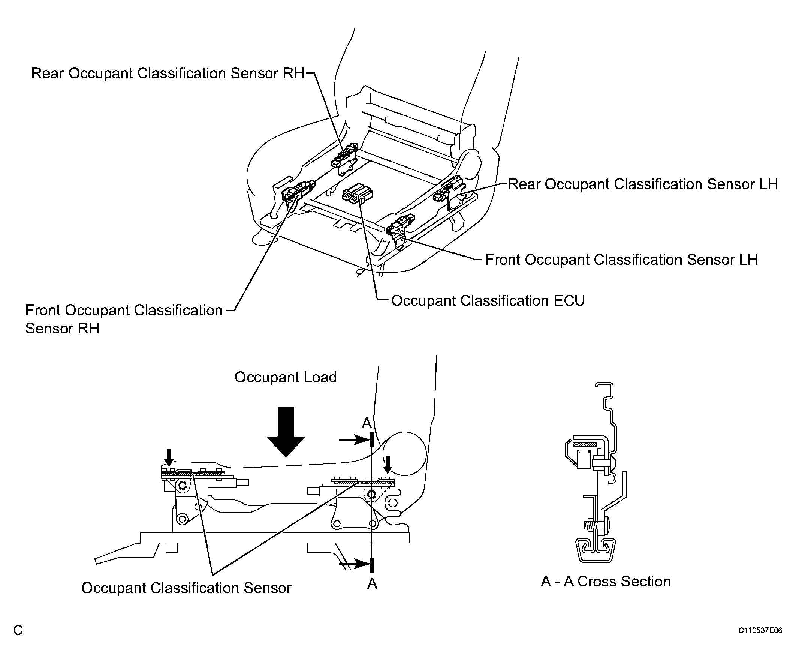

System Description
- DESCRIPTION OF OCCUPANT CLASSIFICATION SYSTEM
- General description.
- In the occupant classification system, the occupant classification ECU calculates the weight of the occupant based on a signal from the occupant classification sensors. This system recognizes the occupant to be a child if it detects a weight of less than 36 kg (79.37 lb), and disables the front passenger airbag and side airbag (front passenger side).
- This system is mainly comprised of 4 occupant classification sensors that detect the load on the front passenger seat. The occupant classification ECU controls the system, and the passenger airbag ON / OFF indicator indicates the ON / OFF condition of the front passenger airbag and side airbag (front passenger side).
- Occupant classification sensor.

Courtesy of © TOYOTA, LICENSE AGREEMENT TMS1002- The occupant classification sensors are installed on 4 brackets connecting the seat rail and seat frame. Accordingly, when a load is applied to the front passenger seat by sitting on it, the occupant classification sensors register a distortion.
- Description for passenger airbag ON / OFF indicator.
- The passenger airbag ON / OFF indicator is installed on the air conditioning control. This indicator informs the driver whether the occupant classification ECU puts the front passenger airbag and side airbag (front passenger side) into an active state or inactive state.
- If a malfunction occurs in the occupant classification system, the "OFF" indication of the passenger airbag ON / OFF indicator and the SRS warning light will come on.
- General description.